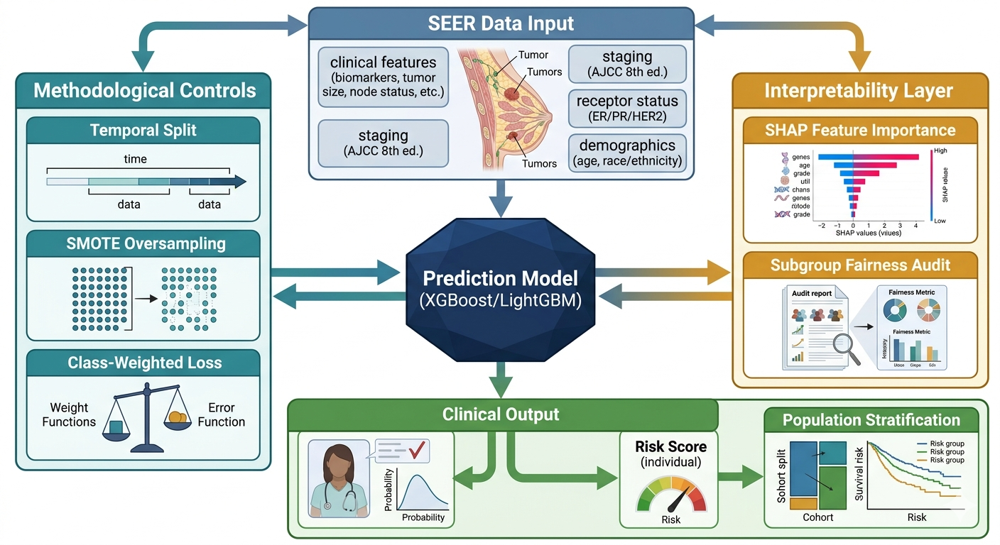

Raw records
Breast cancer diagnoses, ICD-O-3 C50, from SEER 17 registries.
M2 · Data Acquisition
The project uses SEER Research Plus breast cancer records from 2018-2023, exported through SEER*Stat and preserved as immutable raw CSV files.
Breast cancer diagnoses, ICD-O-3 C50, from SEER 17 registries.
Includes clinical, demographic, staging, biomarker, treatment, and outcome fields.
Clinical relevance and missingness filtering reduce noise before preprocessing.

SEER provides population-level cancer registry data with standardized staging, receptor status, survival follow-up, and demographic variables. The 2018+ window aligns with EOD 2018 staging and modern molecular marker availability.
Acquisition workflow
The retained set includes age, sex, race, marital status, income, rural-urban code, tumor size, histology, grade, EOD stage, T/N/M recodes, ER/PR/HER2 status, breast subtype, lymph node variables, metastatic site indicators, and outcome audit fields.
Legacy staging fields, non-breast site-specific factors, fully blank retired schemas, and redundant age recodes are removed to reduce noise and multicollinearity.
The project documents selection bias, information bias, confounding by race and income, missingness codes, multiple primaries, class imbalance, and temporal distribution shift.
Variable map
| Variable group | Examples | Role in the demo story |
|---|---|---|
| Demographics | Age, race, marital status, income context, rural-urban code | Support subgroup analysis and social-context risk signals. |
| Tumor biology | Tumor size, grade, histology, laterality | Represent disease severity at diagnosis. |
| Staging | EOD stage group, T/N/M recodes, metastatic site indicators | Provide the strongest clinical structure for prognosis. |
| Biomarkers | ER, PR, HER2, molecular subtype | Capture breast cancer subtype differences, including triple-negative risk. |
| Outcome audit fields | Vital status, survival time, cause-specific death classification | Used to construct and audit the label, not as ordinary predictors. |
Data risk controls